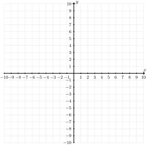

1.
Sketch graph of the linear inequality \(5x - 2y \lt 10\text{.}\)

2.
Sketch graph of the linear inequality \(5x - 2y \geq 10\text{.}\)
3.
Match the following equations with their graphs.
\(\displaystyle y + \frac{6}{4}x - 2 \gt 0\)
\(\displaystyle 2y - x + 12 \leq 2x + 16\)
\(\displaystyle 3y > 2x - 6\)
\(\displaystyle y + x -xy \geq \frac{1}{3}x - 2 - xy\)
\(\displaystyle x + 2y > 1 + x + y\)
\(\displaystyle y + x \leq -1 + y\)
4.
Graph the linear absolute value inequality \(\abs{5x - 2y} \leq 10\)